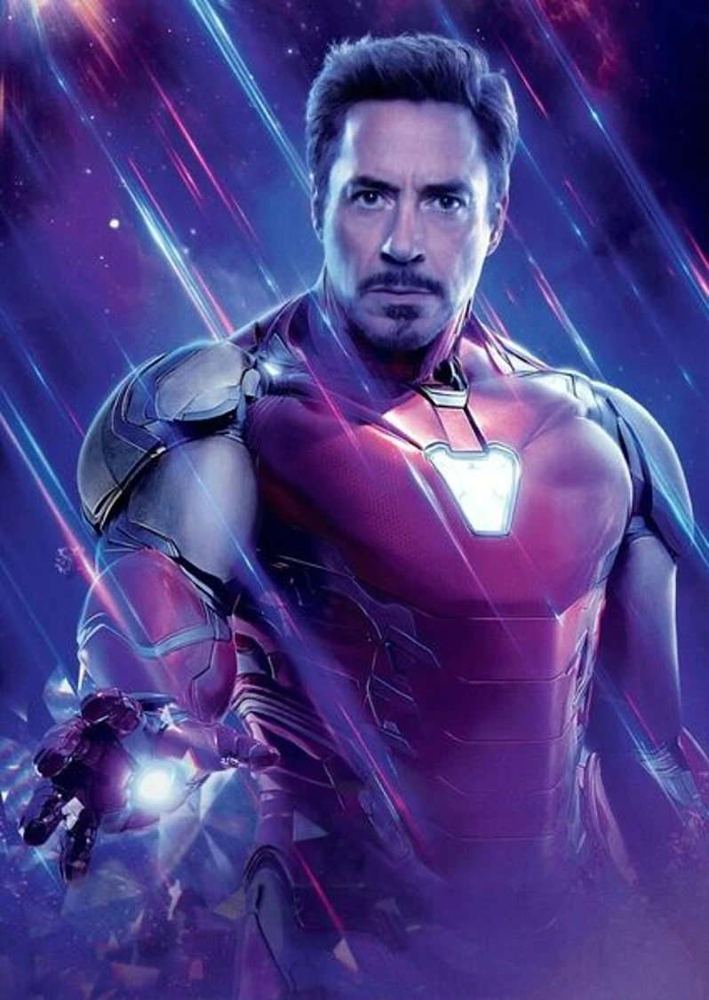
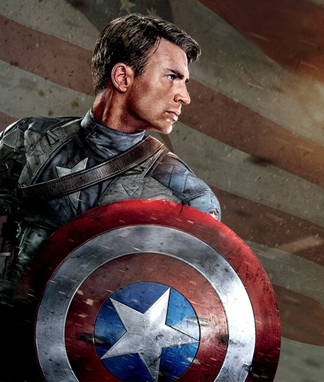
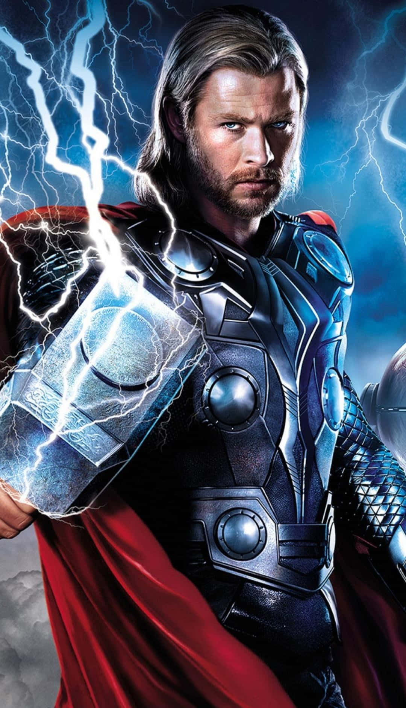
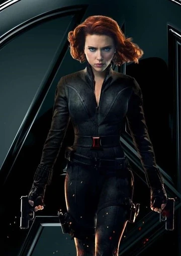

A origem da Marvel começa em 1939 com a criação da Timely Comics, fundada por Martin Goodman. Sua primeira publicação, Marvel Comics #1, trouxe personagens como Namor e a Tocha Humana. Nos anos seguintes, a editora lançou vários heróis populares, incluindo o Capitão América, criado em 1941 por Joe Simon e Jack Kirby. Durante os anos 1950, a Timely se renomeou para Atlas Comics e focou mais em ficção científica e terror, antes de se transformar definitivamente em Marvel Comics na década de 1960. Foi nesse período que Stan Lee, junto com artistas como Jack Kirby e Steve Ditko, revolucionou os quadrinhos ao criar heróis mais humanos, com problemas e falhas, como Homem-Aranha, X-Men, Os 4 Fantásticos, Thor, Hulk, e Homem de Ferro. Esses heróis marcaram o início da Marvel como a conhecemos hoje, com uma identidade própria no mercado de quadrinhos.

Com o passar dos anos, a Marvel expandiu suas fronteiras para o cinema, fundando a Marvel Studios em 1996, que viria a produzir o Universo Cinematográfico Marvel (MCU), começando com o filme Homem de Ferro em 2008. A Marvel se tornou uma potência global, não apenas no setor de quadrinhos, mas também no entretenimento audiovisual.
Quem é: Tony Stark é um gênio, bilionário, playboy e filantropo que cria uma armadura de alta tecnologia para se salvar de um sequestro e, eventualmente, se tornar o super-herói Homem de Ferro.
Características: Arrogante, carismático, inteligente e com um grande senso de humor. Ao longo de sua jornada, ele aprende a ser mais altruísta e responsável, especialmente após os eventos de Os Vingadores e Vingadores: Guerra Infinita.
Curiosidade: A sua história marca o começo do Universo Cinematográfico Marvel (MCU) com o lançamento de Homem de Ferro em 2008, dando início ao MCU.
Quem é: Steve Rogers é um soldado da Segunda Guerra Mundial que, após ser transformado em super-soldado, luta para proteger a Terra e os valores de liberdade e justiça.
Características: Corajoso, honesto, íntegro e com um grande senso de dever. Ele representa a moralidade e a honra, muitas vezes sendo o líder moral do grupo.
Curiosidade: Depois de ser congelado e acordar nos dias atuais, Steve enfrenta o desafio de se adaptar ao mundo moderno, mantendo suas convicções de sempre.
Quem é: thor é o Deus do Trovão de Asgard, conhecido por sua força imensa, seu martelo Mjolnir e suas batalhas contra inimigos cósmicos.
Características: Inicialmente arrogante e impulsivo, Thor aprende a ser mais sábio e responsável. Ele também é caracterizado por seu humor e sua lealdade.
Curiosidade: Embora seja um deus, Thor passa por grandes transformações emocionais, especialmente em Thor: Ragnarok, quando precisa salvar Asgard e seu povo.
Quem é: Natasha Romanoff é uma ex-agente da KGB e uma das melhores espiãs do mundo. Ela se junta aos Vingadores após redimir-se de seu passado sombrio.
Características: Inteligente, habilidosa, estratégica e com uma moralidade complexa. Ela é uma excelente combatente e uma das mais confiáveis dos Vingadores.
Curiosidade: Apesar de ser uma das mais poderosas, Natasha não possui superpoderes, confiando em sua habilidade, treino e astúcia para lutar ao lado dos heróis.